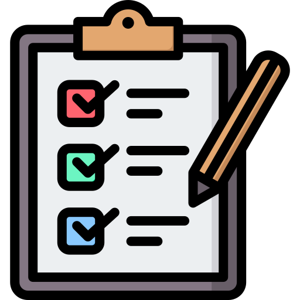

Para organizar todas las tareas que vamos a llevar a cabo en este proyecto, hemos decidido crear el siguiente cronograma para poder detallar como vamos a gestionar el tiempo en distintas tareas a lo largo del desarollo.
| Tarea | Periodo | Personal requerido |
|---|---|---|
| Diseño de la interfaz de usuario | 27/02/2024 - 17/03/2024 | Desarrollador UI/UX junior |
| Planificación del proyecto | 06/03/2024 - 17/03/2024 | Gerencia y administración |
| Configuración de base de datos | 14/03/2024 - 20/03/2024 | Administrador de base de datos |
| Diseño del proyecto | 06/03/2024 - 24/03/2024 | Gerencia y administración |
| Implementación de las entidades | 18/03/2024 - 07/04/2024 | Desarrollador fullstack junior |
| Codificación de la interfaz de usuario | 18/03/2024 - 14/04/2024 | Desarrollador UI/UX junior |
| Definición de casos de uso | 25/03/2024 - 14/04/2024 | Arquitecto de software |
| Creación del diagrama entidad-relación | 25/03/2024 - 21/04/2024 | Administrador de base de datos |
| Desarrollo de consultas y procedimientos almacenados | 01/04/2024 - 28/04/2024 | Administrador de base de datos |
| Generación de informes | 01/04/2024 - 14/04/2024 | Arquitecto de software |
| Creación del diagrama de clases | 08/04/2024 - 21/04/2024 | Arquitecto de software |
| Implementación del manejo de errores y excepciones del cliente | 08/04/2024 - 21/04/2024 | Arquitecto de software |
| Desarrollo de pruebas unitarias | 15/04/2024 - 05/05/2024 | Arquitecto de software |
| Control de versiones y gestión de cambios | 15/04/2024 - 05/05/2024 | Arquitecto de software |
| Creación de servicios RESTful | 22/04/2024 - 12/05/2024 | Desarrollador fullstack junior |
| Implementación del manejo de errores y excepciones del servidor | 22/04/2024 - 12/05/2024 | Desarrollador fullstack junior |
| Pruebas de aceptación y de sistema | 29/04/2024 - 19/05/2024 | Administrador de sistemas |
| Pruebas de integración del servidor | 29/04/2024 - 19/05/2024 | Administrador de sistemas |
| Establecimiento de conexión segura cliente-servidor | 06/05/2024 - 26/05/2024 | Administrador de sistemas |
| Implementación de soporte multi-idioma | 06/05/2024 - 26/05/2024 | Administrador de sistemas |
| Empaquetado y entrega del proyecto | 13/05/2024 - 26/05/2024 | Gerencia y administración |
Al abordar un proyecto en equipo, es fundamental contar con una excelente organización para llevar a cabo el proyecto de manera rápida y eficiente. Para ello, implementaremos una metodología específica: la metodología SCRUM.
SCRUM es un marco ágil para la gestión de proyectos que enfatiza el desarrollo iterativo e incremental. En este enfoque, los requisitos y soluciones evolucionan a medida que avanza el proyecto, adaptándose a las necesidades cambiantes. El trabajo se realiza a través de la colaboración de equipos auto-organizados y multifuncionales, que participan en un proceso continuo de toma de decisiones a corto plazo. Cada iteración del ciclo de vida del proyecto incluye planificación, análisis de requisitos, diseño, desarrollo, pruebas y documentación.
El Scrum Master será el encargado de supervisar y controlar el progreso del proyecto. Evaluará si el desarrollo sigue conforme a lo planificado. A través de reuniones regulares con el equipo, se discutirá la evolución del proyecto, los plazos de entrega de las tareas, cualquier contratiempo surgido y los posibles adelantos. También se podrán proponer diferentes enfoques y soluciones.
Para el seguimiento del proyecto, utilizaremos una herramienta de gestión de proyectos llamada Jira. Este software ya está implementado en nuestra empresa y cuenta con módulos para la gestión de tareas, registro de tiempos y otros desarrollados específicamente para nuestras necesidades.

Al implementar un proceso de auditoría, queremos asegurarnos de que todo el software y la aplicación sean examinados minuciosamente para cumplir con los estándares de calidad exigidos por los usuarios. Esta auditoría se enfoca en evaluar de manera sistemática y objetiva la relevancia, el rendimiento y el éxito de las tareas y del proyecto previamente establecidos. Los beneficios de una auditoría exhaustiva incluyen la identificación temprana de problemas, la reducción de los costos de desarrollo y la optimización del rendimiento.
Nuestra auditoría de software consiste en evaluar y verificar que nuestro producto cumple con sus funciones previstas; valorar el cumplimiento de los objetivos, analizar las desviaciones ocurridas durante el proyecto y evaluar la gestión del proyecto realizada. Si se detectan problemas o desviaciones, se realizará un análisis detallado de lo ocurrido y se implementará un plan para resolver y minimizar estos problemas.
Para llevar a cabo este proceso, contamos con un responsable específico, el Auditor de Calidad de Software. Esta persona se encargará de evaluar y verificar todos los aspectos de la aplicación tanto durante su desarrollo como después de su finalización.